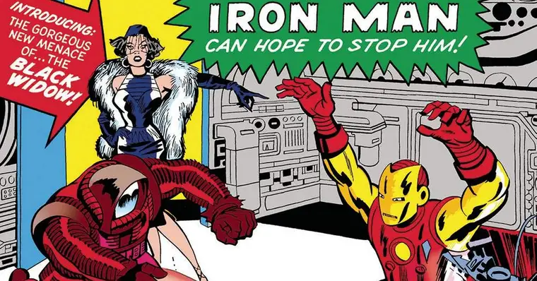

BLACK WIDOW
March 14, 2024Viúva Negra – Origem, características e poderes 🕷️
Uma das grandes personagens popularizadas pelo Universo Cinematográfico da Marvel, a Viúva Negra é uma figura com uma rica e importantíssima história nos quadrinhos, tendo começado sua carreira como vilã e passado por uma grande jornada de redenção, até se tornar uma das heroínas mais valorosas que já estiveram nos Vingadores.
Conhecida por muitos nomes — desde Natalia Romanova até a versão “americanizada”, Natasha Romanoff –, a personagem tem muitas semelhanças com sua contraparte do MCU, mas também muitas diferenças, além de ser aliada de vários heróis inusitados nas HQs. Aqui, reunimos tudo o que você precisa saber sobre a Viúva Negra!
Origem do Viúva Negra ☭
Antes de adotar o nome "americanizado" Natasha Romanoff, a espiã que nós conhecemos como Viúva Negra era Natalia Alianovna Romanova, uma mulher treinada, desde jovem, pela Sala Vermelha, uma organização com laços com a KGB, que treinava jovens mulheres para se tornarem assassinas e espiãs letais para servir ao governo soviético.
Quando jovem, Natalia foi casada como Alexi Shostakov, sem saber que ele era, na verdade, o Guardião Vermelho, um grande herói soviético. Em algumas versões da história da personagem, ela teria sido uma bailarina, já em outros retcons, isso não passa de uma série de memórias implantadas em Natalia para lhe garantir um disfarce apropriado.
Em seus primeiros anos, ela foi enviada aos Estados Unidos para se infiltrar e sabotar projetos norte-americanos. Eventualmente, a personagem passa por uma trama de redenção e é convidada pelo Capitão América para se unir aos Vingadores. Com isso, Natasha Romanoff se torna uma genuína aliada para os americanos, ajudando a enfrentar vários vilões e agentes secretos.
Poderes e habilidades de Natasha Romanoff 🟣💃🏻

Nos quadrinhos - diferente de sua contraparte cinematográfica -, a Viúva Negra sofreu testes e experimentos nas mãos do governo russo, e recebeu uma variante do soro do supersoldado, embora muito menos poderoso que a versão original, pertencente ao Capitão América. Com esse soro, ela possui uma longevidade maior e atributos físicos levemente sobre-humanos.
Natalia Romanova é expert em diversos tipos de luta, como judô, boxe, aikido, savate e caratê, além de ser uma acrobata e bailarina profissional. A personagem tem proficiência com diversos tipos de armas brancas e de fogo, além de ser uma mestre dos disfarces, detetive, estrategista e saber táticas de espionagem. Ela também é poliglota, tendo domínio de mais de seis idiomas.